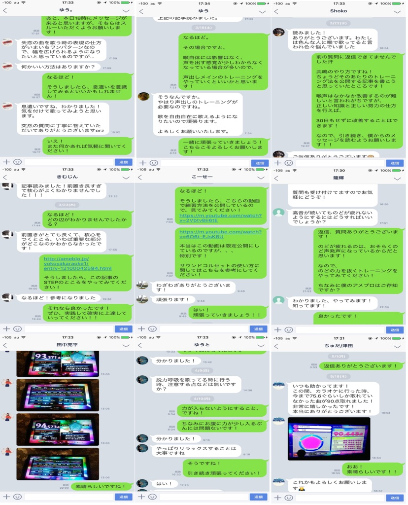
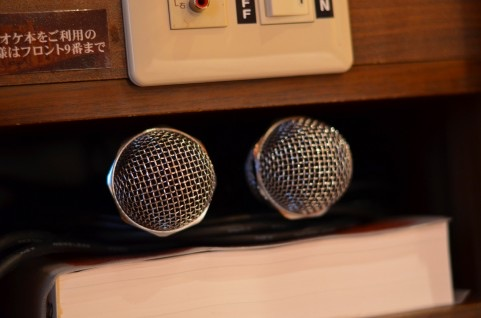
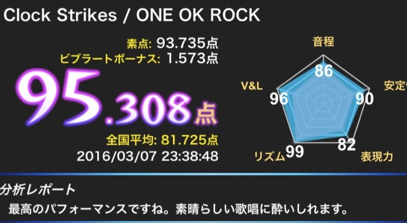

100ページにも及ぶ
９０点超えを出すための練習マニュアル
（解説付き）

【※注意！】
最短最速で精密採点90点を連発し、
他者を圧倒する歌唱力が
3分後にあなたのものになります。
「90点以上を連発するとか興味ない」
「下手でも別に構わない」
という方は100%上達してしまうので
絶対に読まないでください。
※このメソッドは
「ボイトレ業界に不利益な裏情報が書かれている 」
との指摘を受けたため、
今日までの受け付けにしようと思います。
のこり
です。
FOR YOU
当てはまるものをタップしてください
遂に、
あなたのそんな切実な願いが
叶う日がやってきました！
THE PROGRAM
※上達不可避なので
上達したくなければ
この先を読まないでください。
この先を読んでしまうとあなたの上達を
ストップできなくなってしまいます。
それでもいい、
いや、カラオケ精密採点で
90点を超えられるような歌唱力を
手に入れたくてたまらない、
友達の80点台後半という
点数を横目に90点を連発して、
優越感に浸りたい！
聞く人を圧倒するような
歌唱力が欲しい！
今まで
劣等感を感じていた分を
見返してやりたい！
心揺り動かす感動の歌で
女の子の視線を
独り占めし、
とろとろの恋するまなざしで
見つめられるようになりたい！
そんなあなたは是非、
この先を読み進めてください。
今回に限り、
僕からあなたにお伝えしたいものがあります。
それは何かというと・・・
精密採点90点超え量産プログラム、
『精密採点90点以上連発！
上達不可避な超実践LINE@プログラム』
です。
ビブラートのかけ方からこぶしなどの
テクニックから
歌唱力を上げるには
どんな練習をすればいいか
上達に直結した内容になっています。
30日後に必ず、
あなたの点数を90点超えまで
引き上げることができる、
そんなプログラムが
あなたの参加を待っています。
誰もがあなたの歌を絶賛し、
前のめりで聴き入るほどの
凄まじい歌唱力を手にすることができる
無料のLINE@プログラム
に今スグ参加したい！
という方は下記リンクをクリックしてください。
リンクはこちら↓
LINEで受け取る（https://lin.ee/OoEzEVC）AFTER 30 DAYS
このプログラムに参加し、
歌唱力を手にすることによって、
あなたが今まで思い描いていた、
「80点台の人達を追い越し、
それを横目に90点台を出して、
見返し、優越感に浸りたい！」
「バンドで堂々と
歌えるようになりたい！」
「自分の好きな曲が無理なく
歌えるようになりたい！」
「自分の歌声によって
周りから称賛され、
ちやほやされたい！」
このような理想が
30日もあれば手に入れることができます。
あなたが歌い終えると、
「やっぱ○○はすごいな」
「期待以上の歌声だった」
「もう一曲歌ってくれ」
なんてもてはやされ、
カラオケを時間いっぱい
楽しむことができるでしょう。
みんな、
あなたの歌声を聴くために
あなたをカラオケに誘うようになり、
あなた抜きで
カラオケに行くなんて
考えられなくなります。
あなたの歌声に惚れた女の子が
あなたの歌声が聴きたくて
2人っきりでカラオケに行こう、
なんて誘われることも。
「今度歌を教えてほしいから
また一緒に行ていい？」
なんて言われたらたまりませんね。
将来、あなたが就職したときに、
カラオケボックスでも
飲み会に誘われても、
会社の同僚、上司が
「めっちゃ上手いじゃないか！」
「すごいな！」
と驚かれ、ちやほやされ、
会社内の宴会でのヒーローに。
歌がうまくなることで、
発声が良くなり、
声も良くなるので、
今までよりもハキハキとした声になり、
会社内での印象がぐんと良くなり、
そのおかげで昇給なんてことも。
歌がうまくなることは
恋愛のみならず、
仕事面でもいいことづくめなのです。
IF YOU DON’T
しかし、これを知らないと、
残念ながら、
あなたはどんなに練習しても
その努力が 報われることはないでしょうし、
友達とカラオケに行っても、
トイレやドリンクの
お代わりに行こうとしたり、
彼女とのLINEに夢中だったり、
暇そうにパズドラを起動したり、
はたまた、デンモクで
次に歌う曲を探すのに必死だったり、
あなたの歌には一切興味なしです。
あなたは
「順番だから」
という義務感のみで歌うことになり、
カラオケを
心から楽しむことはできません。
このページを最後まで読み切ることで、
あなたは上に挙げたような
悲惨な事態を防ぐことができ、
なおかつ、
30日間という超短期間で
あなたの思い描いていた
理想の未来が手に入るのです。
プログラム参加者からの
感謝の声もたくさんいただいています。
ぜひ、あなたにも このような喜びを感じてほしいです。
これが実際に感想をいただいたときの
スクリーンショットです。

（掲載の許可を得ています。）
あなたの歌唱力を強制的に
引き上げてしまう
完全無料のLINE@プログラム
に今スグ参加したい！
という方は下記リンクをクリックして
受け取ってください。
リンクはこちら↓
LINEで受け取る（https://lin.ee/OoEzEVC）CONTENTS
このプログラムの中身を紹介しますね。
100ページにも及ぶ
９０点超えを出すための練習マニュアル
（解説付き）
もっとも最短最速で精密採点で
高得点を取るための完全マニュアル

（実際にお受け取りいただくマニュアルの目次です。）
約3分～5分×15本で合計 1時間分の解説動画

をあなたにお渡しします。
実際にお渡しする動画の一部がこちらです。
↓↓↓↓↓↓↓↓
THE TRAP
もう一度言います。
この先を読んでしまうと
あなたの上達を
ストップできなくなってしまいます。
なので
上達したくなければ
ここでページを閉じてください。
どうしても上達したい！
そんな方のみ、
この先の文章にお進みください。
ここから先は上達したい方だけに
向けて書いていきます。
「どうしても上達したい！」
そう思ってページを閉じずに
ここまで読み進めてくださっている
センスのいいあなたへ。
今日は
今まで語られていなかった、
「あなたが
なかなか上達しない原因」を
暴露してしまおうと思います。
あなたの歌がなかなか上達しないのには、
ボイストレーニングや歌の技術の習得に
ある”罠”があったからなのです。
あなたももしかすると、
この罠にはまっている可能性があります。
それは何かと言うと、
書店やネット、スクールごとに
いっていることが違ったり、
現在のボイストレーニング界に
「歌に関する不確かな情報が
あふれているからなのです。」
もともと歌がうまかった人達が、
「こんな感じかな？」
となんとなくの想像で
大した実績や確証もないまま、
そのメソッドに
「○○チャンピオン」
とか
「○○音大卒の誰だれが」
といった権威を使って
本を販売したり、
ネットにサイトを作って
売り上げを伸ばすために
作られていたのです。
もちろん、
しっかりと教えている
ボイストレーナーもいますが、
大半がこの
正しいトレーニング法を知らない、
なんとなく教えている人たちによって、
あなたはあふれる情報に
翻弄させられ、
あなたの上達は遅れていたのです。
もし、あなたが
今の自分の歌に自信がないのだとしたら、
今スグにこのメソッドを実践してください。
必ずや、精密採点で90点超えの世界まで
連れていくことをお約束します。
あなたに原因はありません。
「正しいトレーニング法」と「実践」
この2つがそろっていなかっただけなのです。
なのであなたも
「正しいトレーニング法と実践」
さえ押さえれば、
嫌でも上達してしまいます。
精密採点で90点を超えるのなんてすぐです。
ぜひ、このメソッドを使って、
あなたの求める理想の歌唱力を
手に入れてください。
あなたの眠る才能をたたき起こし、
歌唱力を強制的に引き上げてしまう 、
上達回避不可能。
最短最速で精密採点90点以上連発
トレーニングメソッド
を手に入れるには
下記リンクをクリックしてください。
リンクはこちら↓
LINEで受け取る（https://lin.ee/OoEzEVC）STORY
ここまで断言できるほどの
最強のプログラムを構築するに至った
その経緯を少しお話しします。
僕が高校生だった頃の話です。
僕がカラオケで悩んでいた頃、
喉から手が出るほど欲しかったのは、
ボイトレ本やスクールに手を出さなくとも
手っ取り早く上達できる、
そんなトレーニング法でした。
来る日も来る日も、
書店に並んでいるボイトレ教材を
買い漁り、
インターネットでボーカルスクールを
調べたり、
検索エンジンで「カラオケ 上達」
なんて検索して
溢れかえる情報を前に途方に暮れる…
そんな日々が僕にはありました。
決して、トレーニングを
サボっていたわけじゃないんです。
大好きでたまらない歌を散々バカにされ、
悔しくて必死でトレーニングに励むも、
全然点数アップに繋がらず、
僕が歌い出すとみんな
クスクス笑い出し、
「音痴にもほどがある」
「下手くそは歌うな」
「よこはみんなの引き立て役」
直接言われはしなかったものの、
そんな視線を浴びながら、
額に汗を浮かべ、
ビクビクしながら歌っていたのを 覚えています。

毎日のように
カラオケボックスに通いつめ、
点数を上げるために
練習に練習を重ねる日々、
１ヶ月が経つも、
点数は変わらず。
「機械ごときに歌唱力などわかるものか」
と、自分の上達を信じて疑わず、
自信満々で
友達とカラオケに行った日のこと。
「お前さ、自分が音痴って自覚ある？」
この言葉が胸に突き刺さりました。
悔しくて情けなくて、
どうしたらいいかわからず
震えていました。
こんなにも努力したのに…
そう思って
自分の部屋で声を押し殺して
泣いたこともありました。
でも僕は昔から負けず嫌いで
歌も大好きだったので、
ここで諦めるわけにはいかない、
あいつらを見返してやる、
そんな強い想いで
練習を続けました。
とりあえず
何から始めればいいのかわからず、
「カラオケで高得点をとる方法」
「誰でも上手くなるボイトレ術」
などというタイトルに踊らされ、
数多くのボイトレ本を買うのに、
軽く数万は費やしたと思います。
しかし、それらは全て
実践するにはあまりにも抽象的すぎて、
具体的に何をすれば何を鍛えられるのか、
そのポイントがわからず、
僕の音痴は音痴のままでした。
教本では限界があるだろうし、
上手い人に教えてもらえば
きっと自分も上手くなる、
そう信じて ボーカルスクールに通ってみたのですが…
「結局中身はボイトレ本と一緒かよ」
これが正直な感想でした。
教本に書かれているようなことを
自称「トレーナー」が
教えてくれるだけ。
絶望しました。
月に４回のレッスンで６万円ほどかかる
ボーカルスクールに通い、
それでも一向に上達せず、
お金だけが吸い取られていく。
もうだめだ、
結局歌は才能なんだ…
悔しいけど、諦めるしかない。
TURNING POINT
そう思って諦めかけていた時、
僕に大きな転機が訪れました。
師匠との出会いです。
その方は、
世界的にも有名なプロ歌手を
指導していた実績をお持ちで、
多くの歌手から絶大な指示を集める
凄腕のボイストレーナーだったのです。
「僕にも歌を教えてください！」
必死で頼み込みました。
もちろん、忙しい中、
僕を相手にしてくれるわけもなく、
２度は断られました。
「どうしても歌が上手くなりたい」
僕は諦めませんでした。
そして３度目。
僕の熱意が伝わったのか、
ついに教えていただけることに。
それ以来、
僕は様々なトレーニングを
受けてきました。
その方が教えてくださった
トレーニング法は、
今まで僕が買った本や
スクールのトレーナーの
教えることとは全く違ったもので、
世界でも通用するプロ歌手に
教えている方法をそのまま僕に
教えてくださったのです。
「これは本当に上手く行くかもしれない」
やっと光が差してきた！
そんな気分でした。
その方のおっしゃることを信じて
実際に試してみた結果…
なんと、
何をやってもダメだった僕が
本当に成長していったんです！
74点からのスタートで、
１週間で83点
２週間で88点
３週間で90点を安定して超えるほどに。
60708090100
わずか１ヶ月で
95点に到達したのです！

（とある点数管理サイトの
スクリーンショットです。）
このトレーニングはホンモノだ！
天井を突き破りそうなほど
カラオケボックスで跳び上がり、
すぐに採点結果の写メを撮って
師匠に送ったのを覚えています。
自分の声域も広がり、
楽に高音域を出せるようになり、
音程も安定してきて、
音程正確率もかなり高ポイントに。
声が安定するから、ビブラートもかけやすい。
今までに経験したことがないほど
歌唱力の上昇を実感しました。
その数日後に
友達数人で
カラオケに行ったんですが、
「どんな練習したんだ」
「誰かの喉と取り替えたみたい」
「もう一曲歌ってくれよ」
などと言われ、
みんなも驚くほどに
上手くなっていたんです。
女の子からは、
「歌上手い人ってかっこいいよね?」
なんて言われたり。
歌うことを
こんなに楽しいと感じたのは
初めてです。
僕はただの「音痴」から
急速にプロ級の歌唱力を身につけたというので
学校中で話題になりました。
すると、後輩や同級生、
先輩までもが、
「僕にも歌を教えて！」
と頼んでくるようになり、
そんな人たちに
トレーニング法を一つ一つ教えてくと、
「精密採点で90点を超えました！」
「バンドでボーカルを 担当してくれと言われた！」
「この方法を実践してから、
好きな曲を好きなだけ、
歌えるようになりました！」
など、
数々の喜びの声を
いただけるようになりました。
そのとき僕は気づいたんです。
僕だけじゃない、
この方法なら誰でも上達できる、と。
今でも僕は多くの方から、
「カラオケの点数を上げたい」
と相談を持ち掛けられます。
そして誰もが最後には
「こんなにも簡単なことだったんですね…
もっと早く知りたかったです！」
「ありがとうございました」
と言ってくださるのです。
生まれつきの
音感やリズム感、強靭な喉…
そんなもの、カラオケ上達に
一つも必要ありません。
たった一つ、
必要なものがあるとすれば、
それは
「100%点数に結びつくような
効率的なトレーニング法」
これに尽きます。
センス、才能がないこんな僕でも
１ヶ月でカラオケ95点を叩き出し、
同じようにカラオケで悩んでいた人も
実践するだけで90点を超えてしまう、
こんなありえないことが
現実に起こったのは、
「100%点数に結びつく
効率的なトレーニング法」を
知ってしまったからに他なりません。
この記事を通して
僕があなたに伝えたい
たった一つのこと、
それは、
センスのかけらも感じられない
音痴の中の音痴でも、
100%効果が出て
30日以内に90点を超えられるような
嘘みたいなトレーニング法が存在する、
ということです。
僕は今まで
師匠から教わったことをベースに、
さらに効率よくできないか、
初心者にとってもっとわかりやすい
教え方ができないだろうか…
そんなことを常に考えつづけ、
改良に改良を重ねた結果、
ようやく一つのメソッドに
まとめることができました。
RESULTS
僕がこのプログラムを完成させてから、
15人の方に実践していただきました。
結果、15人全員が、
30日以内に「90点を超えた」という
報告をくださったのです。
早い人では26日間で
72点から91点まで
点数を急上昇させたという
報告メールもいただきました。
もちろんあなたはまだ
実践はおろか、このプログラムの中身を
見てすらいないわけですし、
正直信じがたいことでしょう。
「そんなもん嘘に決まってる」
そう思われるのも無理はないでしょう。
僕は人間ですから、
嘘をつくこともできますよね。
しかし、
実績は嘘をつきません。
実践したすべての人が、
このメソッドをホンモノだと
認めています。
だから僕には少なくとも
あなたを上達させる自信はあります。
そして今回、
あなたにも是非その感動を味わってほしい
という思いから、
僕が作ったこのメソッドを
1つのプログラムにまとめ、
あなたにお伝えすることを
決意しました。
その名も、
精密採点90点超え量産プログラム、
『気持ちよく歌って
精密採点90点以上連発！
上達回避不可能な超実践メソッド』
です。
僕のもとには
多ければ1日60通ほどの
質問や問い合わせが寄せられ、
その中にはカラオケで
相当悩んでいらっしゃる方も
かなり多いんですね。
きっと、こんな長い文章を
ここまで読んでくださったあなたも、
そのうちの1人だと思います。
そんなあなたに、
歌を楽しむことを諦めないでほしい。
知っているか、知らないかの
違いだけなんです。
知ってさえいれば、
あなただって「30日で90点超え」を
達成できるのです。
そのための方法をギュッと凝縮し、
不要なものは切り捨て、
選び抜かれたトレーニング法だけを記した
このプログラムに、
あなたにも是非、
参加してほしいのです。
理想の歌唱力を手に入れ、
30日で90点超えを確定させる
厳選された100％実践的
トレーニングメソッドを受け取るには
下記リンクをクリックしてください。
リンクはこちら↓
LINEで受け取る（https://lin.ee/OoEzEVC）YOUR FUTURE
最後までやり遂げた暁には、
あなたの歌の悩みは
すべて解消され、
多くの人からカラオケに誘われすぎて、
自分の時間がとれない
「俺にも教えろ」
とみんなから詰め寄られる
といった、
より贅沢な悩みを
抱えていることでしょう。
今まであなたの歌をネタにし、
バカにしてきた友達、
自分の歌に見向きもしなかった
黒髪ロングの可愛い女の子、
30日後にはみんな
あなたの歌に釘付けになり、
あなたに歌を教えてほしい、
あなたとカラオケに行きたい、
あなたの歌が聴きたい、
あなたのファンになった、
そんな人たちがあなたに
殺到するようになり、
あなたは芸能人のような
待遇を受けるでしょう。
こんな未来は
もうすぐ先に待っているのです。
「やっぱりどうも疑わしい」
そう思われるなら、
受け取らないでください。
僕は、
本当に歌のことで悩んでいて、
僕のことを信じて
ついてきてくださった
本気の【あなた】にだけ
受け取ってほしいのです。
要らないなら、
ブラウザの「×」ボタンを押して
ページを閉じていただいても
構いません。
ただ、
今受け取らないことで、
ホンモノのトレーニング法を知らないまま
カラオケを諦めてしまう、
そんなことになってもいいのか、
よく考えてほしいと思います。
YOUR CHOICE
あなたがカラオケでスターのような扱いを受けるのか
or
カラオケを苦痛に感じて、歌う楽しさを見失ってしまうのか
それはすべて、
今のあなたの選択にかかっているのです。
「もうわかったから、
そのプログラムの参加方法を教えてくれ！」
そう思われたあなたに、
プログラム参加の手順をお伝えします。
僕のプログラムに参加し、
理想の歌唱力を手に入れるために
あなたがやるべきことは
すごく簡単です。
下記のリンク（http～から始まるやつ）
をクリックします
僕の公式LINE@
「ボーカルプロデューサーよこ」
というアカウントが出てきて、
アイコンの下に緑の「追加」ボタン
があるので「追加」ボタンを押してください
「追加」ボタンを押すと、
さっそく僕からメッセージが
送られてくると思います。
そのメッセージに先着特典の
精密採点90点必達パッケージを
受け取るご案内をしますので、
そこからお受け取りください。
誰からも認められ、
求められるような歌声を手に入れて、
気持ちよくカラオケを心から楽しむための
”上達回避不可能な超実践メソッド”
を今スグ手に入れるには
下記リンクをクリックしてください。
リンクはこちら↓
LINEで受け取る（https://lin.ee/OoEzEVC）NO RISK
もちろんLINE@の
追加は完全無料で、
後で料金を請求するなんてことも
ありません。
迷惑スパムが届いたり
変なサイトに登録したり、
ウイルスが送られてくるなど、
あなたが困ることも全くなく、
ただLINE@に追加いただくだけで
精密採点90点超えを果たして
理想の歌唱力を手に入れるための、
具体的なノウハウが
一切のリスクなく手に入るということです。
いただいた個人情報は、
僕からあなたに、
今回のLINE@プログラムも含めた
有益な情報を
お送りするためだけに使用し、
第三者の目に触れないように
パスワードによって保護します。
お金をいただくことは
一切ありませんので、
あなたは
このLINE@からのメソッドを受け取って、
得られるものはあっても
失うものはない状態です。
LIMITED 25
ただし、一つだけ
了承していただきたいことがあります。
それは、
このプログラムは
【25名限定】でお渡しする予定
だということです。
理由は２つあります。
まず１つ目。
このプログラムには
世間一般にまず出回ることがない
「ヤバい」情報が詰まっていて、
おそらくこれを
あまりに多くの人に提供してしまうと、
大手ボーカルスクールを１社
潰してしまうことになると思うんです。
ボイトレ業界にかなりの打撃を
与えてしまいかねない、
とんでもない情報だからこそ、
あまり多くの人とは共有せず
あなたと僕の秘密にしておきたい、
そう思うのです。
それから、２つ目。
実践した人が
100%成功しているこのプログラムを
あまりに多くの人に渡してしまっては、
あなたの周りの人まで
みんな同じように上達してしまい、
あなたが周りを圧倒できなくなってしまいます。
これではあまり意味がないので、
このプログラムが
欲しくて欲しくてたまらない、と
渇望している、
そんな「選ばれし25名」にのみ
お渡ししたいのです。
そして、本気で覚悟を決めて
飛び込んでくださった方に
参加していただきたいので、
抽選ではなく先着順とさせてください。
「早いもの勝ち」ですので、
25名を超えてしまったら、
ページを閉じることも考えています。
あなたが心底ほしいと
思っていらっしゃるなら、
枠がまだ残っているうちに、
成功回避不可能なメソッドを
お受け取りください。
もうすでに18人の方がこのメソッドを
手に入れているので残りは後7人です。
18 / 25 受取済み
この記事を閉じたら受け取れない可能性があるのでお早めに。
下の青文字をクリックして、
LINE@追加の画面が
表示されれば、
まだお受け取りいただくことが可能ですので
すぐにご参加ください。
25名限定超実践的プログラムに
今すぐ、ノーリスクで参加し、
90点を悠々と出すには
下記リンクをクリックして
LINE@を追加ください。
リンクはこちら↓
LINEで受け取る（https://lin.ee/OoEzEVC）MESSAGE
何度も言いますが、
これを実践したからには
上達以外の道はない、
そう思ってください。
嫌でも上達してしまうほど
恐ろしく効果のある内容になっています。
このプログラムが
あなたの手に渡った瞬間、
あなたの上達は
【確定】したも同然です。
どうか、あなたも、
このプログラムに参加し、
喜びの声を聞かせてください。
POSTSCRIPT
大変多くの反響をいただいています！

この方法を知っておくだけで、
もう僕みたいに音痴で悔しい思いをせず、
あなたは精密採点でも90点以上を
ラクラク叩き出すことができるでしょう。
普段カラオケに言っている友達からは
「どんな練習したんだ」
「誰かの喉と取り替えたみたい」
「もう一曲歌ってくれよ」
女の子からは、
「よこ君ってこんなに歌うまかったんだ♡」
なんて言われたり。
歌うことを
こんなに楽しいと感じたのは
初めてです。
僕自身、歌に劣等感があって
ずっと悔しい思いをしてきたので
この感動を早くあなたにも
実感してほしいのです！
ここだけの話、
僕はあなたには隠れた才能があると
思っています。
ただ、
まだあなたは
自分の才能を発揮できるメソッドに
出会えていないだけなのです。
それは
書店やネット、スクールごとに
言っていることが違ったり、
歌に関する
不確かな情報があふれていたりと、
現在のボイストレーニング界の現状、
仕方のないことです。
もし、あなたが
今の自分の歌に自信がないのだとしたら、
今スグにこのメソッドを実践してください。
必ずや、精密採点90点超えの世界まで
連れていくことをお約束します。
あなたの眠る才能をたたき起こし、
歌唱力を強制的に引き上げてしまう 、
上達回避不可能。
最短最速で精密採点90点以上連発
トレーニングメソッド
を手に入れるには
下記リンクをクリックしてください。
リンクはこちら↓
LINEで受け取る（https://lin.ee/OoEzEVC）LAST
あなたに原因はありません。
「正しいトレーニング法」と「実践」
この2つがそろっていなかっただけなのです。
なのであなたも
「正しいトレーニング法と実践」
さえ押さえれば、
嫌でも上達してしまします。
精密採点90点超えなんてラクラクです。
ぜひ、このメソッドを使って、
あなたの求める理想の歌唱力を
手に入れてください。
僕の強い思いが
あなたに少しでも伝われば
とても嬉しく思います。
では、「参加する！」
と意思を固めた方は
毎日配信無料LINE@の中でお会いしましょう。